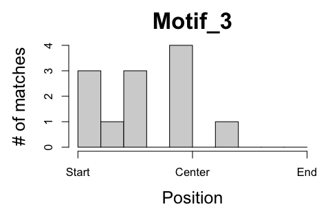

De novo motif discovery with rGADEM,
Jim Zhang
2019-08-31
Introduction
This analysis performs the main functionality of Bioconductor package rGADEM to discover de novo motif(s) over-represented in a set of DNA sequences. Please read the package manual first for background about GADEM algorithm and how to choose its parameters.
The set of DNA sequences, within which de novo motifs and their position weighted matrix (PWM) will be discovered, can be provided as a named character vector, an DNAStringSet object, or a set of genomic loci within a reference genome, such as BSgenome.Hsapiens.NCBI.GRCh38.
This analysis includes three major steps:
- The GADEM {rGADEM} is called using given parameters to discover over-presented de novo motifs from a set of DNA sequences.
- The motifs and their matches in the DNA sequences are summarized and visualized.
- The motifs are searched again within the DNA sequences using the matchPWM {Biostrings} function and a p value cutoff, to identify report all matches and their matching scores.
1 Description
1.1 Project
rGADAM wrapper
2 Results
2.1 Summarize sequences
GADEM discovers de novo motifs in a given set of DNA sequences. The length, number, base frequency, and complexity of the sequences could all impact the output of GADEM, such as the specificity of motifs and the significance of matches. It’s preferable to exclude outliers from the analysis, and strong overall bias of any characteristics could be a concern for follow-up analysis.
81 sequences are analyzed by the GADEM {rGADEM} function to discover de novo motifs, using the following parameters:
- Seed PWM: Spwm = no
- Number of EM step: numEM = 80
- P value cutoff of matches: pValue = 2e-04
- Mask low-complexity sequences: maskR = yes
- Maximal number of motifs allowed: nmotifs = 25
Table 1. Summary of DNA sequences.
- Length (bp): full length of DNA sequences
- GC (%): frequency of G and C
- CpG (%): frequency of CG or GC sites
- Duplex (%): frequency of duplexes (AA, CC, GG, or TT)
Click here to view details of individual sequences.
| Min. | 1st Qu. | Median | Mean | 3rd Qu. | Max. | |
|---|---|---|---|---|---|---|
| Length (bp) | 201.00 | 201.00 | 201.00 | 201.00 | 201.00 | 201.00 |
| GC (%) | 25.87 | 46.27 | 56.22 | 56.88 | 69.65 | 86.57 |
| CpG (%) | 1.50 | 7.00 | 12.00 | 14.51 | 22.00 | 34.50 |
| Duplex (%) | 20.00 | 27.50 | 31.00 | 31.16 | 34.00 | 49.00 |
2.2 Discover motifs
GADEM is run using given parameters to discover motifs from DNA sequences. It reports the consensus sequence and PWM of each motif, as well as the most significant matches that the consensus and PWM are based upon.
Table 2. Summary of motifs found from sequences. Click motif name to see full list of matches to each motif and their details. Click consensus sequence to see its PWM.
- GC (%): average GC frequency at all position in PWM.
- Num_Base: length of the motif.
- Num_Match: total number of matches to the motif reported by GADEM in any sequences.
- Num_Seq: number of sequences including one or more matches to the motif
- RevComp (%): percent of matches on the reversed direction
| Name | Consensus | GC (%) | Num_Base | Num_Match | Num_Seq | RevComp (%) |
|---|---|---|---|---|---|---|
| Motif_1 | sCCCsCsCCkCysCCnCCCn | 81.16 | 20 | 68 | 39 | 55.9 |
| Motif_2 | nTTTdTwAAwswnwwrnywrA | 27.98 | 21 | 45 | 29 | 40.0 |
| Motif_3 | ssyynCmnmrTCTrGrAwGTGAGGAGCsksTCykC | 58.26 | 35 | 12 | 7 | 0.0 |
| PWM Logo | Matching position |
|---|---|
|
|

|
|
|

|
|  |
Figure 1. Motif visualization. The right panel shows the logo of the consensus sequences based on their PWM. The y-axis represents the frequency of nucleotides at each position. The left panel shows the relative positions of the matches to the motif within the sequences. The positions are directional based on the strand of the matches and the sequences in genomne.
2.3 Search motifs
The following steps are applied to identify more matches to the motifs discovered by GADEM and properly evaluate their significance:
- Calculate overall base frequency in all DNA sequences.
- For each motif, draw 100000 random sequences if the same length based on overall base frequency.
- Get the background distribution of matching scores based on the agreement between all random sequences and the motif.
- Obtain a cutoff matching score based on the background distribution with an empirical p value less than 0.005
- Search and report matches to the motif in DNA sequences using the cutoff matching score, using the *matchPWM {Biostrings} function.
Table 3. Summary of matches to the motifs:
- Motif: nanme of motifs, click to view full list of matches
- Len_Motif: length of motifs
- Match_Per_Kb: number of matches in each kilobase of DNA sequences
- Num_Match: total number of matches
- Num_Seq: number of sequences containing one or more matches
- RevComp (%): percent of matches on the opposite direction
- Min_Score, Mean_Score, Max_Score: range of matching scores (0 - 100)
| Motif | Len_Motif | Match_Per_Kb | Num_Match | Num_Seq | RevComp (%) | Min_Score | Mean_Score | Max_Score |
|---|---|---|---|---|---|---|---|---|
| Motif_1 | 20 | 11.664 | 171 | 58 | 58.48 | 67.0 | 76.72 | 93.8 |
| Motif_2 | 21 | 10.082 | 147 | 57 | 46.26 | 66.1 | 74.06 | 92.9 |
| Motif_3 | 35 | 8.181 | 110 | 62 | 51.82 | 57.3 | 62.82 | 98.8 |
Figure 2. Distribution of relative positions of motif matches within the DNA sequences. Grey bar is the number of matches within each 5% interval and blue star is the average Phred score (-log10 transformed p value) of matches within the interval.
3 Download
- Motif_1: PWM | GADEM hits | All matches
- Motif_2: PWM | GADEM hits | All matches
- Motif_3: PWM | GADEM hits | All matches
4 Appendix
Check out the RoCA home page for more information.
4.1 Reproduce this report
To reproduce this report:
Find the data analysis template you want to use and an example of its pairing YAML file here and download the YAML example to your working directory
To generate a new report using your own input data and parameter, edit the following items in the YAML file:
- output : where you want to put the output files
- home : the URL if you have a home page for your project
- analyst : your name
- description : background information about your project, analysis, etc.
- input : where are your input data, read instruction for preparing them
- parameter : parameters for this analysis; read instruction about how to prepare input data
Run the code below within R Console or RStudio, preferablly with a new R session:
if (!require(devtools)) { install.packages('devtools'); require(devtools); }
if (!require(RCurl)) { install.packages('RCurl'); require(RCurl); }
if (!require(RoCA)) { install_github('zhezhangsh/RoCAR'); require(RoCA); }
CreateReport(filename.yaml); # filename.yaml is the YAML file you just downloaded and editedIf there is no complaint, go to the output folder and open the index.html file to view report.
4.2 Session information
## R version 3.5.1 (2018-07-02)
## Platform: x86_64-apple-darwin15.6.0 (64-bit)
## Running under: macOS High Sierra 10.13.6
##
## Matrix products: default
## BLAS: /System/Library/Frameworks/Accelerate.framework/Versions/A/Frameworks/vecLib.framework/Versions/A/libBLAS.dylib
## LAPACK: /Library/Frameworks/R.framework/Versions/3.5/Resources/lib/libRlapack.dylib
##
## locale:
## [1] en_US.UTF-8/en_US.UTF-8/en_US.UTF-8/C/en_US.UTF-8/en_US.UTF-8
##
## attached base packages:
## [1] grid stats4 parallel stats graphics grDevices utils
## [8] datasets methods base
##
## other attached packages:
## [1] BSgenome.Hsapiens.NCBI.GRCh38_1.3.1000
## [2] Agri_0.0.0.9000
## [3] rGADEM_2.30.0
## [4] seqLogo_1.48.0
## [5] BSgenome_1.50.0
## [6] rtracklayer_1.42.1
## [7] Biostrings_2.50.1
## [8] XVector_0.22.0
## [9] GenomicFeatures_1.34.1
## [10] AnnotationDbi_1.44.0
## [11] Biobase_2.42.0
## [12] GenomicRanges_1.34.0
## [13] GenomeInfoDb_1.18.1
## [14] IRanges_2.16.0
## [15] S4Vectors_0.20.1
## [16] BiocGenerics_0.28.0
## [17] htmlwidgets_1.3
## [18] DT_0.5
## [19] kableExtra_0.9.0
## [20] awsomics_0.0.0.9000
## [21] yaml_2.2.0
## [22] rmarkdown_1.10
## [23] knitr_1.20
## [24] RoCA_0.0.0.9000
## [25] RCurl_1.95-4.11
## [26] bitops_1.0-6
## [27] usethis_1.4.0
## [28] devtools_2.0.1
##
## loaded via a namespace (and not attached):
## [1] matrixStats_0.54.0 fs_1.2.6
## [3] bit64_0.9-7 progress_1.2.0
## [5] httr_1.3.1 rprojroot_1.3-2
## [7] tools_3.5.1 backports_1.1.2
## [9] R6_2.3.0 DBI_1.0.0
## [11] colorspace_1.3-2 withr_2.1.2
## [13] prettyunits_1.0.2 processx_3.2.0
## [15] bit_1.1-14 compiler_3.5.1
## [17] cli_1.0.1 rvest_0.3.2
## [19] xml2_1.2.0 desc_1.2.0
## [21] DelayedArray_0.8.0 scales_1.0.0
## [23] readr_1.3.1 callr_3.0.0
## [25] stringr_1.3.1 digest_0.6.18
## [27] Rsamtools_1.34.0 base64enc_0.1-3
## [29] pkgconfig_2.0.2 htmltools_0.3.6
## [31] sessioninfo_1.1.1 highr_0.7
## [33] rlang_0.4.0 rstudioapi_0.8
## [35] RSQLite_2.1.1 shiny_1.2.0
## [37] jsonlite_1.5 crosstalk_1.0.0
## [39] BiocParallel_1.16.2 magrittr_1.5
## [41] GenomeInfoDbData_1.2.0 Matrix_1.2-15
## [43] Rcpp_1.0.0 munsell_0.5.0
## [45] stringi_1.2.4 SummarizedExperiment_1.12.0
## [47] zlibbioc_1.28.0 pkgbuild_1.0.2
## [49] blob_1.1.1 promises_1.0.1
## [51] crayon_1.3.4 lattice_0.20-38
## [53] hms_0.4.2 ps_1.2.1
## [55] pillar_1.3.0 biomaRt_2.38.0
## [57] pkgload_1.0.2 XML_3.98-1.16
## [59] glue_1.3.0 evaluate_0.12
## [61] remotes_2.0.2 httpuv_1.4.5
## [63] testthat_2.2.1 assertthat_0.2.0
## [65] mime_0.6 xtable_1.8-3
## [67] later_0.7.5 viridisLite_0.3.0
## [69] tibble_1.4.2 GenomicAlignments_1.18.0
## [71] memoise_1.1.0END OF DOCUMENT